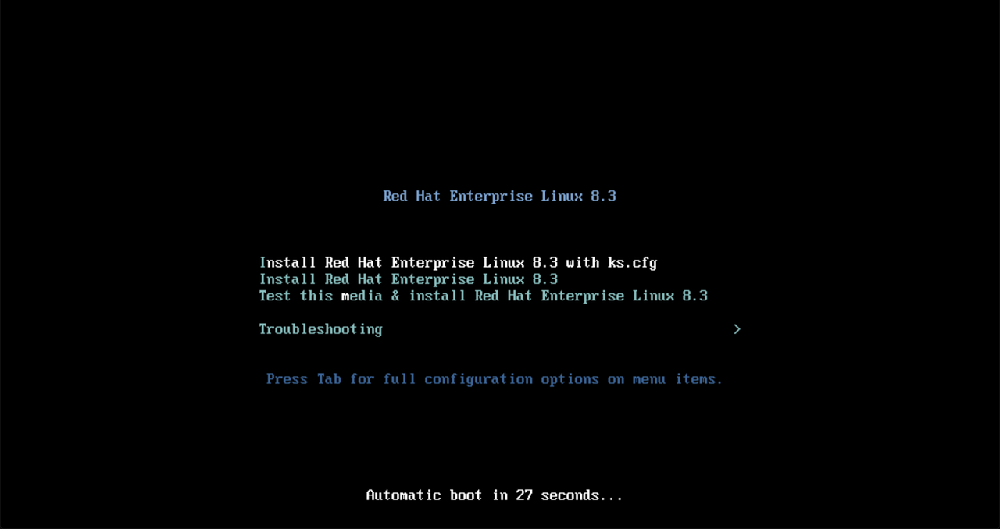
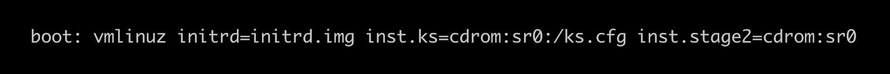

Automating a RHEL 8 Installation Using the VMware REST Ansible Collection
Automating a RHEL 8 Installation Using the VMware REST Ansible Collection
Managing virtual machines in an IT infrastructure is often a common task, specifically VMware virtualization technology has been around for over 20 years. VMware administrators spend a lot of their time in automating the creation, management, and removal of virtual instances that contain various operating systems. One operating system that often resides on VMware infrastructure is Red Hat Enterprise Linux.
With the introduction of VMware REST APIs, we recently announced the
initial release of the vmware.vmware_rest Collection,
for production use. As opposed to the community.vmware Collection, the
vmware.vmware_rest Collection is based on next generation VMware REST
APIs. This new Collection no longer requires any third party Python
bindings to communicate with VMware infrastructure. A large part of the
new Collection that has been introduced is support for automating
virtual machine operations.
In this blog post I will show you how VMware users can automate the
installation of Red Hat Enterprise Linux 8 (RHEL 8) using the
vmware.vmware_rest.vcenter_vm module and a valid Kickstart file.
Scenario requirements
For this scenario, we will assume following requirements:
- vCenter 7.0.1 or latest with at least one ESXi
- RHEL 8 installation DVD
- Ansible
- vmware.vmware_rest collection installed with latest version
Preparing Installation ISO file
We will be automating RHEL 8 installation using the Kickstart file fetched via iso image file. We will not discuss Kickstart file creation and management as this has already been covered in the documentation. You might want to visit Kickstart Info Access Labs to refresh your knowledge.
Gathering information about infrastructure
We will use environment variables to specify VMware credentials. This will make playbooks short and tidy. In order to do this, you need specify following environment variables:
- VMWARE_HOST
- VMWARE_USER
- VMWARE_PASSWORD
- VMWARE_VALIDATE_CERTS
Let us now start with our playbook which will create the virtual machine in vCenter. All modules in vmware.vmware_rest Collection use VMware managed object ID (MoID) for identifying and referencing VMware objects. The MoIDs are unique in the given vCenter so there is no need to specify names and folders.
We need to provide information where the virtual machine is going to be placed. This information comprises MoIDs of cluster, datastore, folder and resource pool. We can use existing modules from vmware.vmware_rest Collection to collect this information.
- name: Get Cluster info vmware.vmware_rest.vcenter_cluster_info: filter_names: - "{{ cluster_name }}" register: cluster_info - name: Get Resource info for {{ cluster_name }} vmware.vmware_rest.vcenter_cluster_info: cluster: "{{ cluster_info.value[0].cluster }}" register: resource_pool_info - name: Get datastore info vmware.vmware_rest.vcenter_datastore_info: filter_names: - "{{ datastore_name }}" register: datastore_info - name: Get folder info vmware.vmware_rest.vcenter_folder_info: filter_names: - '{{ folder_name }}' register: folder_info
We will need information about the standard portgroup to which the virtual machine is going to be attached to. Gathering information about the MoID of a standard portgroup can be done using vmware.vmware_rest.vcenter_network_info module.
- name: Get a list of the networks with a filter vmware.vmware_rest.vcenter_network_info: filter_types: STANDARD_PORTGROUP filter_names: - "VM Network" register: network_info
Creating a virtual machine
Once we have all the information required for create a virtual machine,
let us move on to the module which creates the virtual machine that is
vcenter_vm:
- name: Create a VM vmware.vmware_rest.vcenter_vm: boot: delay: 0 enter_setup_mode: false retry: false retry_delay: 10000 type: "BIOS" boot_devices: [] cdroms: - allow_guest_control: true backing: type: "ISO_FILE" iso_file: "[ds_200] iso/rhel_8.3_ks.iso" ide: master: true primary: true label: "CD/DVD drive 1" start_connected: true type: "IDE" cpu: cores_per_socket: 1 count: 1 hot_add_enabled: false hot_remove_enabled: false disks: - new_vmdk: capacity: 536870912 label: "Hard disk 1" scsi: bus: 0 unit: 0 type: "SCSI" guest_OS: "OTHER_LINUX_64" hardware_version: "VMX_13" memory: hot_add_enabled: true size_MiB: 4096 name: test_vm_3 nics: - start_connected: true type: VMXNET3 mac_type: GENERATED backing: type: STANDARD_PORTGROUP network: "{{ network_id }}" scsi_adapters: - label: "SCSI controller 0" scsi: bus: 0 unit: 7 sharing: "NONE" type: "PVSCSI" placement: datastore: '{{ datastore_id }}' folder: '{{ folder_id }}' resource_pool: '{{ resource_pool_id }}' register: vm_info
Here, we specified to create a virtual machine with 4 GB memory with 1 single NIC attached to "VM network". Additionally, we attached a CDROM to this virtual machine for installation DVD with kickstart file inside it.
You can power on the virtual machine using following tasks:
- name: Turn the power-on the VM vmware.vmware_rest.vcenter_vm_power: state: start vm: '{{ vm_info.id }}'
After powering on the virtual machine, installation will start as default option with the given kickstart file:

Boot menu with Kickstart file as default option

Linux Kernel boot parameters
It will take some time to install the new operating system, depending upon the configurations. You can mark this newly installed virtual machine as a template and can use it for clone operation.
Conclusion & Where to go next
Combining this Collection with vmware.vmware_rest, Ansible users can
better manage virtual instances on VMware infrastructure with faster
iterations and easier maintenance.
Ansible lets you connect the different technologies with your VMware infrastructure that are ultimately needed to be successful in your efforts.
The Collection vmware.vmware_rest is a solid foundation for VMware
automation, which is coming in the near future. We're always looking to
improve to help users like you get things done in more simplified,
faster ways.